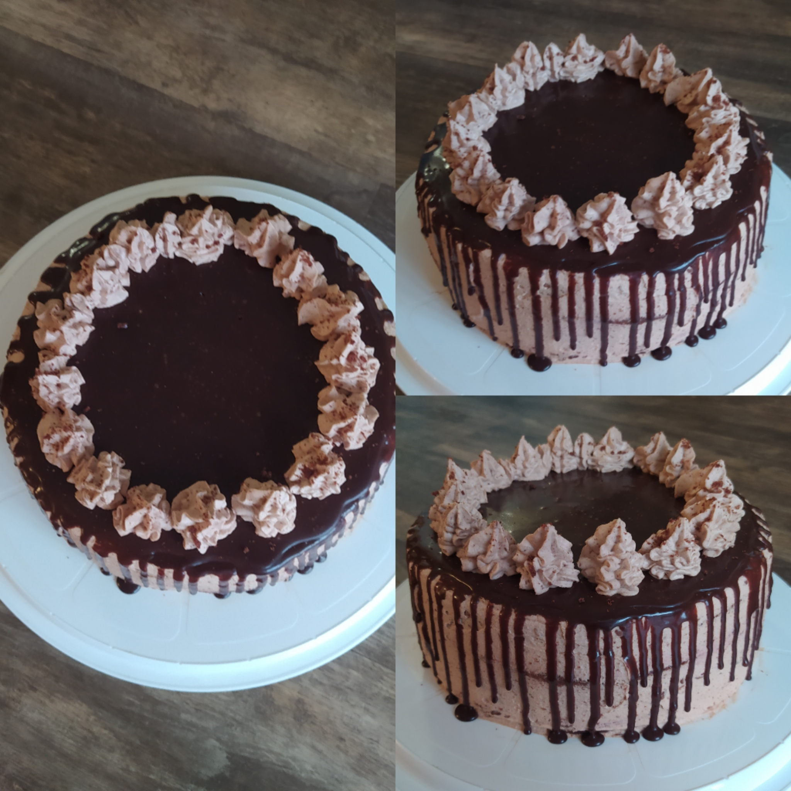

Prague Cake

Ingredients:
Biscuit:
- 4 eggs
- 140 gr sugar
- a pinch of salt
- 130 gr flour
- 8 gr baking powder
- 40 gr cocoa
- 80 gr milk
- 100 gr vegetable oil
Impregnation:
- 80 gr milk
- 1 tbsp apricot jam
Cream:
- 400 gr milk
- 3 yolks
- 130 gr sugar
- 35 gr cornstarch
- 250 gr cream 35%
- 80 gr chocolate 70%
Direction:
- To prepare a biscuit, we need to break eggs, add sugar to them and beat until fluffy and stable mass. Then, in a separate bowl, mix all dry ingredients, flour, baking powder, salt. We add the entire dry mixture to the egg mass in 3 stages, passing through a sieve. Mix the resulting mass gently, moving from top to bottom. Heat oil, milk and cocoa to 300F and mix until smooth. Gently add to the egg mixture, also stir. We cover a baking sheet with a diameter of 20 cm with baking paper, put the resulting mass there. In a preheated oven 375K put protvin, about 30 minutes, be guided by your oven. Let the resulting biscuit cool on a wire rack. Cooled biscuit cut into 3 equal parts.
- To prepare a cream, yolks, milk, sugar and fear put in a strach and bring to a boil, but do not boil, then add the chocolate to the hot mixture and stir until smooth. Let cool. We need to wip heavy wipping cream with mixture to stable peaks.
Cake assembly:
Soak each layer with impregnation or syrup (mix warm milk and jam), then apply cream and filling on each layer.We level the cake and decorate it with glaze.